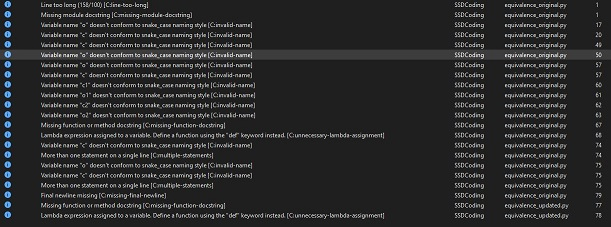
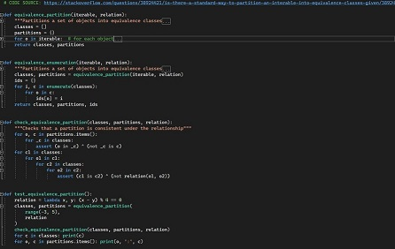
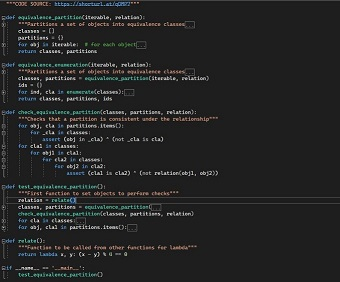

Equivalence testing in Python
The exercise was to run an existing piece of code made avaialble in an online IDE. For this purpose i decided to use the code in Visual Studio. On initial inspection of the code there were a number of issues and pylint was used to examine the code. Pylint returned several issues which i actioned as part of the exercise to make the code more favourable. Once the code was refactored pylint returned no warnings. By renaming variables, adding docstrings and other general formatting and restructuring of the code Pylint returned 0 warnings.
Whilst I did not investigate the functionality of the code to any great length i found that there were more issues to be resolved with Pylint to rectify poor structure, naming conventions and commentary. Upon investigating the code there were some observations. Mainly the recommendation from Pylint to move the lamda expression into it's own function. This is a really good example of the efficeinecy of the Pylint tool whilst also reducing complexity by placing the expression into a reusable function.
However, on intial inspection I did feel that there was unnecessary complexity in the code functions. The main one been the nesting of for loops. From a coding perspective a developer would not want to introduce to many nested for loops within a loop as it leads to confusion and overly complex code.
Pylint results
Equivalence original
Equivalence updated
Cyclomatic complexity relevance today
One of the challenges of software and secure software design is the validity of code and it's inherent testing and the scale of re-usability and modularity. McCabe's Cyclomatic Complexity is often considered but does it still retain relevance today with trends such as Agile software development leading to quicker, iterative design, build and release or with the rising popularity in microservices. Cyclomatic complexity determines stability and confidence in a program by measuring the number of linear and independent paths through software.
I consider cyclomatic complexity to have some relevance in current software design practices but given the rapid advances in programming languages, interoperability and methodologies it is perhaps not as relevant as when it was first proposed. (Shepperd 1988) debates that the high acceptance of the model by the software engineering community it is very rarely questioned. Whilst applying a rule of assessing control paths through a module it does not consider the complexity inside each path. Furthermore the assesment and review of maintenance of a new or existing solution would determine the complexity of code which may be more dependent on the organisation, resources and skills as well as the identified problem or requirements. These may determine the level of complexity required in software.
(Gill & Kemerer 1991) discuss the complexity of existing systems whilst assuming that complex systems are harder to maintain, suffer more entropy becoming chaotic. Whilst using cyclomatic complexity as a tool to asses exisiting modules does hold some relevance it is the organisation itself that determines the repair/replace decision so dependent on the maintenance on the existing code one could argue that logical decisions are made on cost, resource, time rather than reviewing how many linear steps or paths a piece of code has taken.
In summary i would still agree that elements of McCabe's cyclomatic complexity could still be applied. However, as discussed the evolution of programming languages, methodologies and libraries do significantly reduce levels of complexity. For example, delivering in an Agile method if building a new system would only deliver smaller tactical modules of code which would have limited dependency on exixting or future modules. Libraries also offer the ability to leverage modules and functions that remove the need to write extensive code therefore making software more flexible and modular.
References:
Shepperd, M. (1988) A critique of cyclomatic complexity as a software metric. Software Engineering Journal, 3(2): 30-36.
Gill, G.K. and Kemerer, C.F. (1991) Cyclomatic complexity density and software maintenance productivity. IEEE transactions on software engineering, 17(12): 1284-1288.